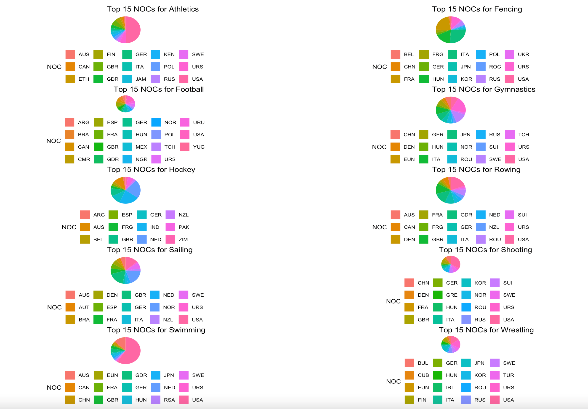
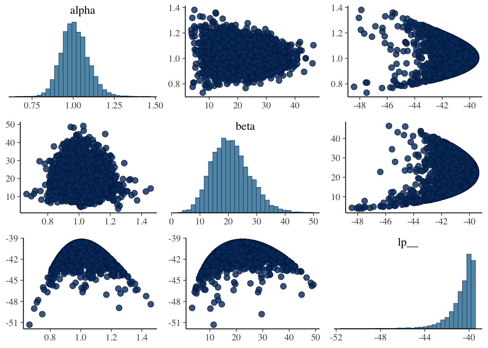
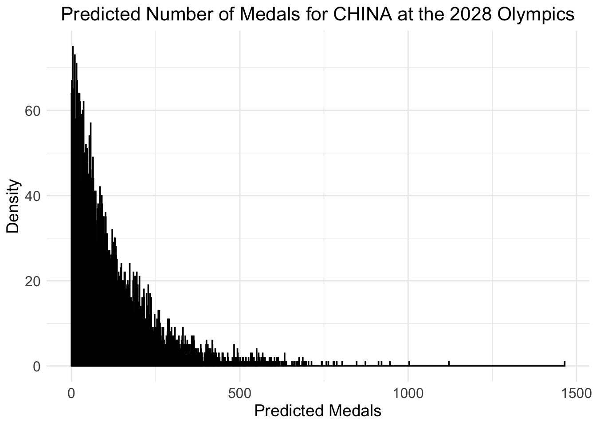

The Riddle of Olympic Medal Table: Mathematical Model Prediction and Multi-factor Analysis
Abstract
The Summer Olympics are held every four years. The Olympic medal tally and its related influencing factors are a focus of general concern. Therefore, we set up a mathematical model to analyze and forecast the relevant data of the Olympic Games.
Firstly, we build a combinatorial to predict the 2028 Olympic medal. This model comprehensively analyzes the influence of different factors and time series on the Olympic medal table. Therefore, we predict medal distribution that in 2028. Then, we combined the to calculate the number of gold medals in the predicted medals and evaluated the analysis through the posterior distribution. The , indicating that the model has good prediction performance.
Secondly, we used the data to divide countries into two clusters (potential and non-potential) based on historical medal count and whether they have won medals. Then, we use clustering method for analysis and prediction. The final prediction is that will win their first medals, and then we quantify the probability distribution and predict their odds.
Thirdly, we set up a to analyze and explore the impact and relationship between events and organizers on the number of medals. The model training results show that the event has a significant impact on the number of medals, and the . The host country also had a significant on the number of medals, with a . In addition, we established Lasso regression model to explore the most important sports in different countries, and the evaluation error of the model was small, indicating that the model was highly interpretable.
Fourthly, we still use to analyze the influence of coach factor is used to explore the effect of “great coach”. The model results show that the model’s fitting degree . In addition, the model indicates that the great coach has a greater contribution to the number of medals. Then, we use algorithm to solve a model, which employs a to control variables, showing the United States, Japan, Belarus three countries to hire the program and its possible impact on the number of medals in the next Olympic Games.
Finally, we explored three insights from our model and explain their reference value to country Olympic Committees.
As one of the most influential comprehensive sports events in the world, the Summer Olympic Games will be held every four years, attracting the attention of people all over the world. Olympic medals are not only a platform for athletes to show themselves, challenge themselves and pursue excellence, but also reflect a country’s honor, sports strength and Economic strength and many other aspects. By modeling and forecasting the distribution of Olympic medals, it can better optimize the allocation of sports resources, stimulate the athletes’ competitive state and promote the development of science and technology sports.
Restatement of the Problem
To achieve these goals, we need to analyze the provided data and answer the following questions:
Develop a prediction model to forecast the 2028 Los Angeles Summer Olympics medal table and provide the medal distribution of countries compared to the 2024 Summer Olympics.
Build another prediction model to predict how many countries will win their first medal at the next Olympic Games. Model evaluation is also required.
Establish a model to analyze the relationship between the number and type of events in the Olympic Games and the number of medals won by each country, the important sports of different countries and the influence of the selection of home country events on the number of medals won.
Select three sports in which the country could benefit from a great coach and analyze the potential impact of the “great coach” effect on their country’s Olympic performance. Though the data of coach information here is not offered.
Explore the original insights of the model and explain its help to the Olympic Committee.
(Our thinking: The total number of medals is only relevant to time factors that reflected in our ARMA model, the ability of a country in each Olympics programs reflected only by the percentage of the number of medals in this program of this country / the total number of medals in this program, the chance reflected only by the percentage of a certain program / the total number of this program this year, the effect of being a host, the coach effect and other effects that needs to be observed but it is difficult without any other information.)

Assumptions
All countries participating in the Paris 2024 Olympic Games will normally participate in the Los Angeles 2028 Olympic Games without withdrawing or refusing to participate for other reasons.
\(t\) & Time series effect
\(\beta_0\) & Intercept
\(\beta_1\) & Host effect coefficient \(\gamma_j\) & The impact coefficient of each project \(\lambda_i\) & the total medal count \(\log(\lambda_i)\) & The logarithm of the expected number of medals
$x_{ij} $ & \(\text{AthleteMedalRatio}_{ij} \times \text{ProjectPercent}_{j}\) \(\alpha_i\) & Time trend for each country (AR item). \(x_1\) & the host country \(x_j\) & the proportion of medals in an event \(z_j\) & item event ratio \(x_j \cdot z_j\) & Interaction between medal ratio and event ratio \(y_t\)& quantified medal count in \(t\)year \(\beta_0\) & the intercept term of the model \(\epsilon_t\) & error term
\(R^2\) & the coefficient of determination
MAE & the Mean Absolute Error
Hierarchical Bayesian Composite Model
We first estimate the total number of gold medals, and then we model with negative binomial distribution, including OLS estimate \(\lambda\) and Bayes formula +MCMC estimate \(\phi\). After that, we use the Dirichlet distribution to estimate the gold, silver and copper ratio, and finally multiply the estimated total number of gold medals by the ratio to get the medal distribution.
Using OLS and ARMA to estimate \(\lambda_i\)
Firstly, we use OLS to estimate \(\lambda_i\). Instead of selecting \(\lambda_i\) directly, we use \(\log \left(\lambda_i\right)\). This is because we consider that logarithms compress the discreteness of the existing data, bringing it closer to a normal distribution. Besides, logarithmic transformation can better stabilize the variance, thereby improving the stability of the regression model and enhancing its prediction performance. The update equations of Hierarchical Bayesian are as follows: \[
\log \left(\lambda_i\right)=\beta_0+\beta_1 \cdot \operatorname{Host}_i+\sum_{j=1}^M \gamma_j \cdot \text { ProjectAbility }{ }_{i j}+\alpha_i \cdot t+\epsilon_i
\]
Where: \(\alpha_i \cdot t+\epsilon_i \sim \mathcal{N}\left(0, \tau^2\right)\) denotes random error, same as in the ordinary regression residual term. Secondly, we further build time series model(AR and MA) to have a better estimate of the residual term \(\epsilon_i\) by adding time-related information. 1. Autoregressive (AR) model:
Suppose that the number of medals won by the country in this Olympic Games depends on its performance in the previous Olympic Games: \[
y_{i, t}=\alpha_i \cdot y_{i, t-1}+\epsilon_{i t}
\]
Where \(\alpha_i\) is the autoregressive coefficient. 2. Moving Average (MA) model:
Suppose that the medal tally of the past few Olympic Games has an effect on the performance of this Olympic Games: \[
y_{i, t}=\frac{1}{3} \sum_{k=t-3}^{t-1} y_{i, k}+\epsilon_{i t}
\] Team # 2509384 Page 9 of 26 3. Combined model of Autoregression and Moving Average:
The combination of autoregressive and moving average can be used to smooth out fluctuations in medal counts and capture long-term time trends in medal counts. The equation of ARMA model[2] used to describe the error term \(\epsilon_t\) is as follows: \[
\epsilon_t=\phi_1 \epsilon_{t-1}+\phi_2 \epsilon_{t-2}+\cdots+\phi_p \epsilon_{t-p}+\theta_1 \eta_{t-1}+\theta_2 \eta_{t-2}+\cdots+\theta_q \eta_{t-q}
\]
By substituting the error part \(\left(\epsilon_t\right)\) of the ARMA model into the multi-level Bayesian model, we get the synthesized formula as follows: \[
\begin{aligned}
\log \left(\lambda_i\right)= & \beta_0+\beta_1 \cdot \text { Host }_i+\sum_{j=1}^M \gamma_j \cdot \text { ProjectAbility }_{i j}+\alpha_i t+\left(\phi_1 \epsilon_{t-1}+\phi_2 \epsilon_{t-2}+\phi_3 \epsilon_{t-3}+\cdots\right. \\
& \left.+\phi_p \epsilon_{t-p}+\theta_1 \eta_{t-1}+\theta_2 \eta_{t-2}+\cdots+\theta_q \eta_{t-q}\right)
\end{aligned}
\] - Using Hierarchical Bayesian and MCMC to estimate \(\phi\)
According to Bayes’ theorem, we have: \[
P(\phi \mid Y) \sim P(Y \mid \phi) \cdot P(\phi)
\]
Where: - \(P(\phi \mid Y)\) is a posterior distribution. - \(P(Y \mid \phi)\) is the likelihood function. - \(P(\phi)\) is the prior distribution.
In addition, we assume that \(\phi\) follows the inverse gamma distribution[3]. \[
\phi \sim \operatorname{InverseGamma}(\alpha, \beta)
\]
The probability density function of the inverse gamma distribution is: \[
p\left(\phi^2\right)=\frac{\beta^\alpha}{\Gamma(\alpha)} \cdot\left(\phi^2\right)^{-(\alpha+1)} \cdot \exp \left(-\frac{\beta}{\phi^2}\right)
\]
Then, we use the Metropolis-Hastings algorithm for sampling. The basic idea of the Metropolis-Hastings algorithm is to sample from a complex posterior distribution by constructing a candidate distribution. Its formula for calculating the acceptance rate \(\alpha\) for the given current sample \(\phi_{\text {old }}^2\) and candidate sample \(\phi_{\text {new }}^2\) is: \[
\alpha=\min \left(1, \frac{p\left(y \mid \phi_{\text {new }}^2\right) \cdot p\left(\phi_{\text {new }}^2\right)}{p\left(y \mid \phi_{\text {old }}^2\right) \cdot p\left(\phi_{\text {old }}^2\right)}\right)
\]
Where, \(p\left(y \mid \phi^2\right)\) denotes the likelihood function. According to the calculation, we get a sample acceptance of \(30 \%\).
? Here we only use Year but not other information in the estimate in log\(\lambda\) but in the MCM I just say it also adds all sports-related information…Maybe it is not suitable since we do not know future exact information about sport-related information. OMG. Also, time-series already gives us much information and if I add much more variables, maybe it will overfitting???
BUt this model is also not very good
# Install and load necessary librarieslibrary(rstan)
Loading required package: StanHeaders
rstan version 2.32.6 (Stan version 2.32.2)
For execution on a local, multicore CPU with excess RAM we recommend calling
options(mc.cores = parallel::detectCores()).
To avoid recompilation of unchanged Stan programs, we recommend calling
rstan_options(auto_write = TRUE)
For within-chain threading using `reduce_sum()` or `map_rect()` Stan functions,
change `threads_per_chain` option:
rstan_options(threads_per_chain = 1)
library(forecast)
Registered S3 method overwritten by 'quantmod':
method from
as.zoo.data.frame zoo
library(dplyr)
Attaching package: 'dplyr'
The following objects are masked from 'package:stats':
filter, lag
The following objects are masked from 'package:base':
intersect, setdiff, setequal, union
library(bayesplot)
This is bayesplot version 1.11.1
- Online documentation and vignettes at mc-stan.org/bayesplot
- bayesplot theme set to bayesplot::theme_default()
* Does _not_ affect other ggplot2 plots
* See ?bayesplot_theme_set for details on theme setting
# Prepare your dataset (assuming 'data' is your dataframe)data <-read.csv("完美数据.csv")# Filter out data for CHN (China) onlychn_data <-subset(data, NOC =="CHN")# 1. Estimate log(lambda) using OLSchn_data$log_total <-log(chn_data$Total)# Fit OLS model for log(lambda)ols_model <-lm(log_total ~ Year, data = chn_data)# Extract the fitted values and residualschn_data$fitted_log_lambda <-fitted(ols_model)chn_data$residuals <-residuals(ols_model)# 2. Estimate ARMA model for the residualsarma_model <-auto.arima(chn_data$residuals)# Calculate the residuals from the ARMA modelchn_data$residuals_arma <-residuals(arma_model)# 3. Estimate lambda for Negative Binomiallambda_estimates <-exp(chn_data$fitted_log_lambda + chn_data$residuals_arma)# Prepare data for Stan (Negative Binomial model)stan_data <-list(N =nrow(chn_data), # Number of data pointsy = chn_data$Total, # Total medals (observed data)lambda = lambda_estimates # Estimated lambda values)# Stan model code for Negative Binomialstan_code <-"data { int<lower=0> N; int<lower=0> y[N]; real<lower=0> lambda[N];}parameters { real<lower=0> alpha; // Shape parameter of the Negative Binomial real<lower=0> beta; // Scale parameter of the Negative Binomial}model { alpha ~ normal(0, 10); // 设置alpha的先验分布 beta ~ normal(0, 10); // 设置beta的先验分布 for (i in 1:N) { y[i] ~ neg_binomial_2(lambda[i] * alpha, beta); }}"# Fit the model using Stanfit <-stan(model_code = stan_code, data = stan_data, iter =4000, chains =4)
Inference for Stan model: anon_model.
4 chains, each with iter=4000; warmup=2000; thin=1;
post-warmup draws per chain=2000, total post-warmup draws=8000.
mean se_mean sd 2.5% 25% 50% 75% 97.5% n_eff Rhat
alpha 1.01 0.00 0.08 0.86 0.95 1.01 1.06 1.18 4977 1
beta 20.87 0.09 6.62 9.18 16.11 20.43 25.06 34.96 5126 1
lp__ -40.63 0.02 1.12 -43.59 -41.03 -40.28 -39.85 -39.56 2637 1
Samples were drawn using NUTS(diag_e) at Sat May 3 18:33:06 2025.
For each parameter, n_eff is a crude measure of effective sample size,
and Rhat is the potential scale reduction factor on split chains (at
convergence, Rhat=1).
# Extract posterior samples of alpha and betaposterior_samples <-extract(fit)# 4. Predict for 2028 Olympics (CHN)future_years <-data.frame(Year =2028)future_lambda_log <-predict(ols_model, newdata = future_years)# Ensure future_residuals_arma is numeric and extract the forecast valuesfuture_residuals_arma <-as.numeric(predict(arma_model, n.ahead =1)$pred)# Now we can safely add the valuesif (is.numeric(future_lambda_log) &&is.numeric(future_residuals_arma)) { future_lambda <-exp(future_lambda_log + future_residuals_arma)} else {stop("The predicted values are not numeric.")}# Use posterior samples to generate predictions for the 2028 total medals countalpha_sample <- posterior_samples$alphabeta_sample <- posterior_samples$betafuture_medals_samples <-rnbinom(length(alpha_sample), size = alpha_sample, mu = future_lambda)# Calculate the prediction for the 2028 total medals count (mean of posterior samples)predicted_medals <-mean(future_medals_samples)# Output the predicted medalspredicted_medals
[1] 121.3319
# Check pairs plot for sampling problemsmcmc_pairs(fit)

# Load necessary libraries for visualizationlibrary(ggplot2)# Create a dataframe with the predicted medal samplespredicted_medals_df <-data.frame(predicted_medals_samples = future_medals_samples)# Create the visualization (Histogram with density curve)ggplot(predicted_medals_df, aes(x = predicted_medals_samples)) +geom_histogram(binwidth =1, fill ="lightblue", color ="black", alpha =0.7) +geom_density(aes(y = ..density..), fill ="red", alpha =0.3) +labs(title ="Predicted Number of Medals for CHINA at the 2028 Olympics",x ="Predicted Medals",y ="Density") +theme_minimal() +theme(plot.title =element_text(hjust =0.5, size =16),axis.title =element_text(size =14),axis.text =element_text(size =12) )
Warning: The dot-dot notation (`..density..`) was deprecated in ggplot2 3.4.0.
ℹ Please use `after_stat(density)` instead.

4.2 Dirichlet Distribution
4.2.1 Description of Dirichlet distribution
Modeling based on the scale of existing medals: For each country \(i\), we modeled the proportion of gold, silver and bronze medals it won in different events: \[
p_i=\operatorname{Dirichlet}\left(\alpha_i\right)
\]
Where \(p_i=\left(p_{i 1}, p_{i 2}, p_{i 3}\right)\) represents the proportion of gold, silver and bronze medals won by a country’s \(i\) in different events, and \(\alpha_i\) is used as the hyperparameter of Dirichlet distribution to reflect the contribution of different sports to the total number of medals of the country. 2. The number of medals in each event:Once the percentage and total number of medals for each country is obtained, we calculate the specific number of medals for each country in the gold, silver and bronze events using the following formula: \[
y_{i j}=p_{i j} \cdot y_i
\]
Where \(y_{i j}\) represents the number of medals won by the country \(i\) in the event \(j\) (gold, silver or bronze), \(p_{i j}\) is the proportion of medals obtained by the Dirichlet distribution, and \(y_i\) represents the total number of medals won by the country \(i\). 4.2.2 Prior Distribution - Dirichlet distribution hyperparameter Settings : \(\alpha_{i j} \sim \operatorname{Gamma}(1,1)\), representing a prior distribution of the proportion of medals for each country on the item \(j\). Team # 2509384 Page 11 of 26 - Time effect : For autoregressive coefficients and moving average coefficients, assume that their priors are normally distributed: \[
\alpha_i \sim \mathcal{N}(0,10), \quad \beta \sim \mathcal{N}(0,1)
\] - Discrete parameter of negative binomial distribution : \(\phi \sim \operatorname{Gamma}(1,1)\).
K-Means++ Model
In the upcoming Olympic Games, it is expected that several countries will win their first medals. To estimate this prediction, we used the K-means clustering method to predict which countries, that have never won a medal before, are most likely to win their first medal.
5.1 K-means Clustering Steps
The K-means clustering algorithm follows these steps: 1. Choosing the \(K\) value: We determine how many clusters the data should be divided into, typically using methods like the elbow rule.
Calculating distances: For each country, we calculate its position in the feature space and assign it to the nearest cluster based on its distance from the cluster center.
Updating the cluster centers: We recalculate the cluster center based on the data points in the cluster
Iterative optimization: Repeat steps 2 and 3 until the cluster centers converge or change very little.
The mathematical formula for calculating the distance between a data point and the cluster center is as follows: \[
d\left(x_i, \mu_k\right)=\sqrt{\sum_{j=1}^n\left(x_{i j}-\mu_{k j}\right)^2}
\] where: - \(x_i\) is the data point, - \(\mu_k\) is the cluster center, - \(n\) is the number of features in the data.
Through this process, K-means can group countries based on their historical medal data and other relevant factors, helping to identify those with significant medal-winning potential in future Olympic Games.
Credibility Score and Prediction Probability
Credibility Score: Each country obtains a Credibility Score through analysis of clustering and capability data, with higher scores indicating a greater likelihood of winning medals. We can base predictions for first-time medals on the Credibility Score.
Probability Calculation: For countries with higher Credibility Scores, we can define a threshold based on this score.
Probability Distribution: Through the probability distribution, we can quantify these predictions. For example: \[
P(\text { Medal })=\frac{\text { Credibility Score }}{\text { Maximum Credibility Score }}
\] where \(P\) (Medal) represents the probability of a country winning its first medal, and the Credibility Score is normalized by the highest Credibility Score.
The prediction probabilities for each country’s likelihood of winning its first medal in the next Olympic Games are presented in the table below:
Use SA solving target function of the improved ratio of medals per year with penalized dynamic function participating in
In order to find out which projects in various countries need to hire “great coach” to help improve their performance, we established a Simulated Annealing(SA) algorithm to solve it.
??Here, maybe it is imapproapriate to weight each independent variable using this correlation rule但是我不知道咋办了
We set up a formula to calculate the correlation. Based on the independent variables we presented in 7.1 section, we multiply them by different weights. For the quantified ability coefficient, we multiply it by the correlation between the medals won in two Olympic Games. For hosts or not, we multiplied their correlation by the difference in the number of medals between each of the last ten Olympic Games. For the weight of whether to use the coach, we are constructed by 1 minus the weight of the above two coefficients.
The medal increment was calculated using the simulated annealing model. Results show that the “celebrity coach effect” significantly boosts medals. Specifically, the United States sees the largest increase, especially in ice hockey and football, while Japan’s increment is 4, with a smaller effect due to its strong foundation in sports like gymnastics. Belarus has a modest increase of 2, as the coach effect is limited by a weaker foundation in these sports.
Lasso for choosing the most important programs for each country 但是如果按国家来看数据量不够啊？？
# Load required librarylibrary(dplyr)library(tidyr)# Load the datadata1 <-read.csv("aFina0.csv")# Step 1: Group by NOC and Year, and count the number of occurrences for each Sportsport_count <- data1 %>%group_by(NOC, Year, Sport) %>%summarise(Sport_Count =n(), .groups ='drop')# Step 2: Spread the data so that each Sport is a columnsport_count_spread <- sport_count %>%spread(key = Sport, value = Sport_Count, fill =0)# Step 3: Save the result to a new CSV filewrite.csv(sport_count_spread, "sport_count_by_NOC_Year.csv", row.names =FALSE)# Optionally, view the resulthead(sport_count_spread)
# Load necessary librarieslibrary(dplyr)library(ggplot2)# Assuming your dataset is called 'data' data <-read.csv("/Users/luyu/Desktop/MCM2025/Book8.csv")# Function to create and save pie chart for each Year and NOC combinationcreate_pie_chart <-function(year_noc_data, output_dir) {# Select the relevant columns (assuming they are the sports columns) sports_data <- year_noc_data %>%select(-Year, -NOC)# Summarize by finding the top 3 largest values top_3_sports <-sort(colSums(sports_data), decreasing =TRUE)[1:3]# Prepare data for the pie chart pie_data <-data.frame(sport =names(top_3_sports),value = top_3_sports )# Create pie chart pie_chart <-ggplot(pie_data, aes(x ="", y = value, fill = sport)) +geom_bar(stat ="identity", width =1) +coord_polar(theta ="y") +labs(title =paste("Top 3 Sports for", year_noc_data$Year[1], year_noc_data$NOC[1])) +theme_void() +theme(legend.title =element_blank()) +theme(legend.position ="bottom")# Save the pie chart as an image file (e.g., PNG) output_path <-file.path(output_dir, paste("pie_chart_", year_noc_data$Year[1], "_", year_noc_data$NOC[1], ".png", sep =""))ggsave(output_path, pie_chart)}# Example to apply this function to your dataset# Here, data is assumed to be a dataframe with 'Year', 'NOC', and sports columns# Define the directory to save the output imagesoutput_dir <-"/Users/luyu/Desktop/MCM2025 # Update with the desired directory# Loop through each unique Year and NOC combinationfor (year in unique(data$Year)) { for (noc in unique(data$NOC)) { specific_data <- data %>% filter(Year == year, NOC == noc) # Create and save pie chart for the specific Year and NOC combination create_pie_chart(specific_data, output_dir) }}```r# 加载必要的包library(dplyr)# 读取数据data <- read.csv("完美数据.csv")# 选择需要的列selected_vars <- c("Archery", "Athletics", "Badminton", "Basketball", "Basque.Pelota", "Boxing", "Breaking", "Canoeing", "Croquet", "Cycling", "Equestrian", "Fencing", "Football", "Golf", "Gymnastics", "Handball", "Ice.Hockey", "Judo", "Karate", "Lacrosse", "Modern.Pentathlon", "Polo", "Rowing", "Rugby", "Sailing", "Shooting", "Skateboarding", "Sport.Climbing", "Surfing", "Table.Tennis", "Taekwondo", "Tennis", "Triathlon", "Volleyball", "Weightlifting", "Wrestling")# 提取选中的列selected_data <- data[, c("NOC", "Year", selected_vars)]# 创建一个空的dataframe来存储结果top_5_data <- data.frame()# 对每个变量提取前5个最大值对应的行for (var in selected_vars) { top_5_data <- rbind(top_5_data, selected_data %>% arrange(desc(!!sym(var))) %>% slice(1:5) %>% select(NOC, Year, !!sym(var)))}# 保存为新的CSV文件write.csv(top_5_data, "Top_5_Values.csv", row.names = FALSE)# 打印结果表格print(top_5_data)